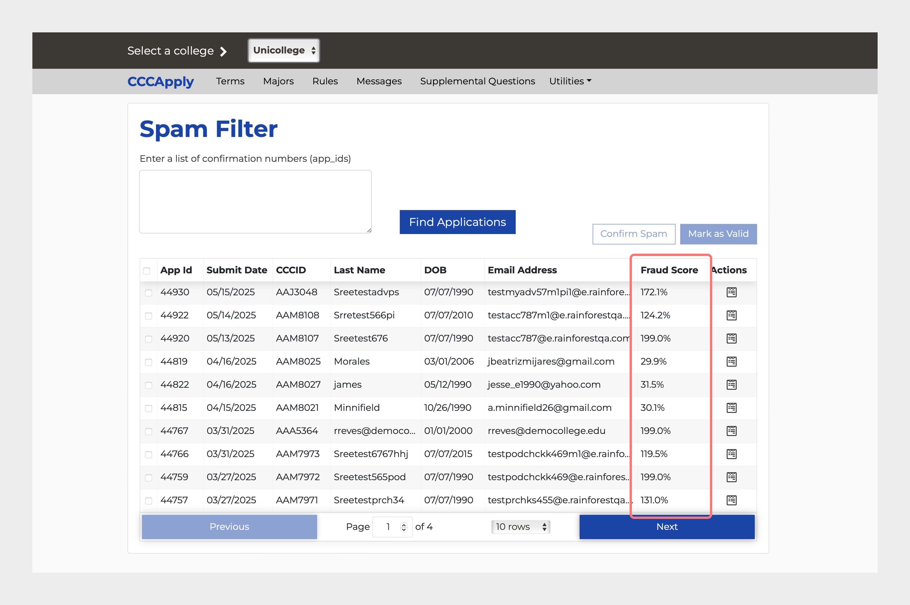

Redesigning FraudGuard to Catch Fake Students

California Community Colleges (CCC) is the largest higher education system in America and reported over 1.2 million fraudulent applications in 2024. Fraudsters scammed over $10 million in student aid and take up limited spots in classes by submitting fake student applications and staying enrolled until they receive financial aid (LA Times).
I was the Lead Product Designer for a 4 month redesign of FraudGuard, CCC's student application fraud detection tool, where I led a senior designer on the first phase of the redesigned FraudGuard, planned workshops, and created a roadmap for the next year in partnership with engineering leads, a fraud analyst working group, and CCC executive leadership.
FraudGuard was outdated, lacked critical features, and colleges were moving to AI vendors and DIY efforts. CCC's AI/ML fraud detection model automatically flagged applications it was confident were real or fake, and would pass the rest to fraud analysts to manually review and flag in FraudGuard.
The goal was to redesign FraudGuard to improve the speed and accuracy of analysts reviewing student applications so they could better keep up with the volume of applications. Improved manual flagging would help train CCC's AI/ML fraud detection model to improve automated detection, creating a virtuous cycle.
We demoed a prototype of the redesign to an anti-fraud working group of 80+ to overwhelmingly positive feedback. The redesign MVP was released in late 2025 to all 116 colleges.
Better Data Slicing on the Dashboard

We spoke to and observed over 30 fraud analysts from a diverse set of colleges across the state. Analysts shared that they rarely used the existing dashboard unless they were looking for a single application and instead imported data into Excel to filter and search for patterns. The table didn't have fields they used to compare.
After

My hypothesis was that we could drive adoption by enabling analysts do their data slicing in the dashboard. I worked with the designer on my team to bring in more powerful sorting and filtering, column reordering, and to allow analysts with simpler workflows to work within the tool rather than switch back and forth to a spreadsheet. We prioritized common workflows and saved advanced data filtering capabilities. Analysts can filter and sort on every single column and more data can be viewed in a horizontal scroll. Columns can be reordered to easily compare data side-by-side.
One enhancement we had to defer was a full-screen default view for the dashboard table. Users would have appreciated the real estate however FraudGuard lived in a site along with other internal apps and would have significantly delayed the release.
Because we had a short timeline, I asked the senior designer to compare and recommend a data grid framework for the dashboard that could support the use cases we observed in our research. We proposed and won support for AG Grid from the UI engineering lead.
Cleaning Up Student Metadata IA
FraudGuard, fraud analysts would use to review applications and flag fraudulent applications. CCC student applications swelled 64% year-over-year and fraud analysts were struggling to keep up.
From contextual inquiries and interviews with fraud analysts we learned they each had their own process but they all cross-checked location, age, and IP Address related fields at minimum. There weren't any logical categories and some key fields were below the fold.

We could improve efficiency by grouping the data into logical categories, prioritizing key fields to the top, and placing commonly compared attributes near each other.

Analysts were often cross-checking data online using IP validators and address checkers. I worked with the engineering team to identify APIs and data dictionaries to automate these checks and surface data in the application metadata view so they could see at a glance if submissions were sent from a suspicious IP address compared to the other locations in the app.
AI/ML Fraud Score Explainer Card

A common stakeholder frustration was that the Fraud Score, the risk rating the fraud detection algorithm assigns each application, wasn't useful. None of the analysts we spoke to understood what the score meant. This score determined what needed manual review or was automatically flagged as fraud. The score wasn't intuitive, sometimes rose above 100% and there was no guidance on how to interpret 55% or an 88%.
I hypothesized that we needed to build trust in it and "show our work" so analysts can compare notes with the score. One constraint we had was that we couldn't reveal the exact threshold or logic that would make an application more suspicious to prevent internal bad actors from reverse engineering the algorithm.

I collaborated with the lead engineer of the algorithm to map out how the fraud score was calculated and how much we could abstract away to improve user understanding. I translated it to a 0-100 scale, color coded it to create buckets for suspicious applications, and included high-level rationales to improve transparency with analysts.